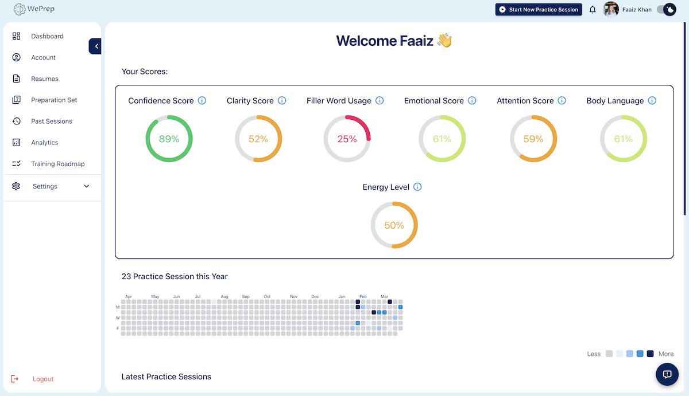

Leverage WePrep's cutting-edge AI models for realistic mock interviews, detailed expert feedback on your responses, and personalized preparation roadmaps to maximize your chances of success in various professional endeavors such as interviews, presentations, sales pitches, or video advertisements. Our state-of-the-art AI algorithms ensure that your preparation is tailored to your specific needs, providing targeted guidance to help you excel in any situation. Whether you're aiming to land your dream job, deliver a compelling presentation, or create impactful marketing campaigns, WePrep equips you with the tools and insights needed to achieve your goals with confidence and precision.

This feature utilizes advanced AI technology to create highly realistic interview scenarios. Through sophisticated lip-syncing and realistic AI-generated avatars, candidates can experience lifelike interactions. The AI generates tailored interview questions based on the user’s industry and role, ensuring a comprehensive and relevant practice session. This immersive experience helps candidates build confidence and refine their interview skills in a realistic and dynamic setting.
Our AI tools enhance communication skills with advanced features. Speech and Language Analysis evaluates speaking performance metrics, while Vocal and Speech Tone measures emotional tones. Attention Levels monitors engagement during presentations, and Body Language and Facial Expressions track non-verbal cues. Articulation and Clarity ensure clear pronunciation, and Detailed Expert Feedback provides constructive suggestions for continuous improvement.
Users receive specific feedback highlighting strengths and providing constructive suggestions for improvement. For example, feedback might commend clear problem descriptions and solutions while suggesting the use of metrics for greater impact. This helps users refine their skills and continuously improve. Additionally, personalized resource recommendations support targeted learning and development.
Watch our demo video showcasing all the features of WePrep. The video provides an in-depth look at how each tool functions, including realistic mock interviews, speech and language analysis, vocal and speech tone measurement, attention level monitoring, body language and facial expression tracking, articulation and clarity assessment, and detailed expert feedback. See firsthand how these features work together to enhance your communication and presentation skills, ensuring you are well-prepared for any professional scenario.
This feature utilizes advanced AI technology to create highly realistic interview scenarios. Through sophisticated lip-syncing and realistic AI-generated avatars, candidates can experience lifelike interactions. The AI generates tailored interview questions based on the user’s industry and role, ensuring a comprehensive and relevant practice session. This immersive experience helps candidates build confidence and refine their interview skills in a realistic and dynamic setting.
Our application offers a comprehensive analysis of your speaking performance using various metrics. These features include assessing Talking Speed to ensure your pace is appropriate, analyzing Filler Usage to minimize unnecessary words, and tracking Hedging Words to improve confidence in your speech. Additionally, the app evaluates Language Positivity to ensure a positive tone, measures Articulation Rate to help you speak clearly, and provides a Pronunciation Score to enhance your clarity and accuracy. These insights collectively help you refine your communication skills for more effective and polished speaking.

This feature measures various emotions such as anger, disgust, fear, happiness, neutrality, sadness, and surprise. By monitoring the fluctuations in these emotional tones throughout your speech, you can gain insights into how your voice conveys emotions and how it may be perceived by others. This helps you adjust your delivery to ensure that your speech aligns with the intended emotional impact, ultimately improving your overall communication effectiveness.
This feature measures attention levels in real-time, providing a detailed graph that shows periods of optimal engagement, recommended focus, warning zones, and critical drops in attention. By analyzing these fluctuations, you can identify which parts of your speech captivate your audience and which sections may need improvement. This insight helps you adjust your presentation style and content to maintain high levels of engagement and ensure your message is effectively communicated.

This feature tracks a range of emotions including anger, disgust, fear, happiness, neutrality, sadness, surprise, and calmness. By providing a detailed breakdown of these emotional expressions over time, you can gain valuable insights into how your non-verbal communication impacts your audience. This analysis helps you refine your gestures, facial expressions, and overall body language to ensure that they align with your verbal message and effectively convey the intended emotions.
This feature measures how well you pronounce and enunciate words, providing a visual representation of your clarity levels throughout your speech. By identifying moments when your articulation is less clear, the application helps you pinpoint specific areas for improvement. This ensures that your speech is consistently clear and easily understood by your audience, enhancing the overall effectiveness of your communication.
Users receive specific comments highlighting the strengths of their responses, along with constructive suggestions for improvement. For example, feedback might commend the user for clearly describing a problem and providing effective solutions, while suggesting the inclusion of metrics or specific outcomes to enhance the precision and impact of the response. This detailed feedback helps users understand their performance and identify areas for refinement, ensuring they can continuously improve their skills.